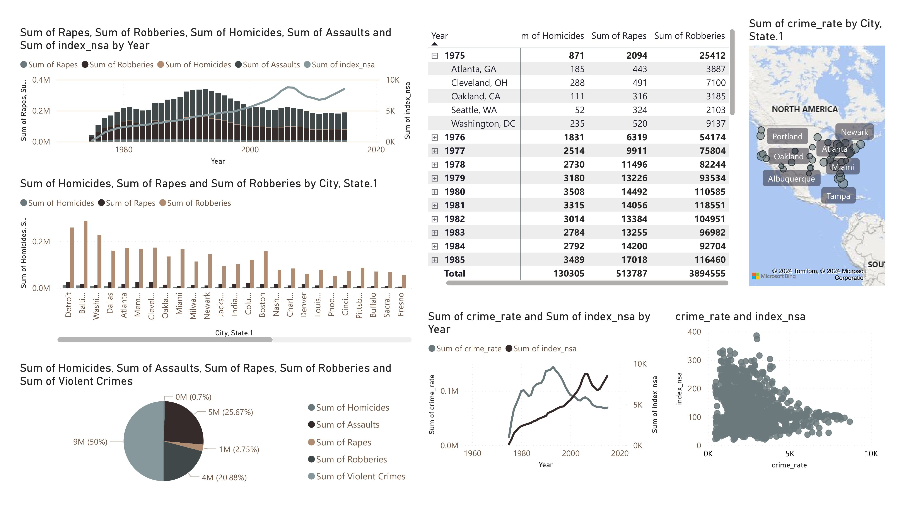
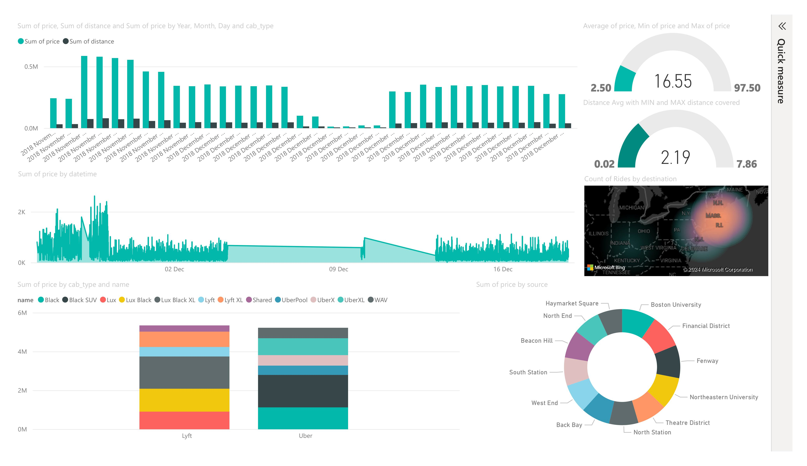

👋 Hi, I'm Divaye Behal!
I'm a Data expert pursuing my MS in Computer and Information Technology, specializing in Data Science. I’m passionate about solving complex business problems by leveraging my Analytics expertise and data engineering skills.
With hands-on experience in AWS, GCP, and cloud architectures, I design scalable data solutions that drive insights. I excel at combining quantitative analysis with creative storytelling, turning raw data into powerful dashboards that make decision-making easier.
Check out my projects to see how I transform data into actionable insights!
Empowering data-driven insights with expertise in analytics and data engineering
Download CVMy Skills
Showcasing expertise in various domains to drive impactful results.
- Descriptive Statistics
- Hypothesis Testing
- Regression Analysis
- Time Series Analysis
- Bayesian Inference
Volunteering Experience
To demonstrate my management and presentation skills, I volunteered at the Indianapolis White River State Park event during the solar eclipse. It was an incredible experience where I managed the information booth for the entire event.
My responsibilities included guiding attendees, answering their questions, and ensuring they had a great experience. I also helped with various other tasks to ensure the event ran smoothly.
This experience allowed me to contribute to a community event and enhance my organizational and communication skills.
Education
Purdue University, West Lafayette, USA (Aug 2023 - Present)
MS, Computer and Information Technology - Data Science
Relevant Coursework: Applied Data Analytics, Business Analytics, Data-Driven Cloud Applications (AWS, GCP), Advanced Data Management (AWS), Statistical Programming, NLP Research (Educational Chatbot), Database Security, Advanced Project Management in Technology, Systems Development, Cloud, Data Centers, and Networks, Statistics.
Bharati Vidyapeeth University, Pune, India (July 2019 – July 2022)
Bachelor of Computer Application, Computer Science and Big Data
Relevant Coursework: Software Engineering, Data Warehousing, Data Mining, Big Data, Data Structures and Algorithms, Business Analytics, Object-Oriented Analysis and Design, Algorithm and Program Design, Business Mathematics, Statistics, DBMS.
Experience
Purdue University (Aug 2023 – Present)
Graduate Teaching Assistant, Indiana, USA
- Tutored students in object-oriented programming languages like Python and relational database languages such as SQL.
Jak Software (Aug 2022 – July 2023)
IT Data Analyst Intern, New Delhi, India
- Designed and managed data pipelines on AWS using Amazon RDS, DynamoDB, and S3 for structured and unstructured data integration.
- Preprocessed and cleaned data using AWS Glue and Lambda to ensure data quality and consistency.
- Performed statistical analysis and advanced analytics with Amazon SageMaker to identify profitable customer segments and optimize marketing strategies.
- Monitored real-time campaign performance using Amazon QuickSight and implemented data-driven adjustments to maximize ROI.
BI Dashboards
Below are some of my interactive Power BI dashboards showcasing data insights:
 Projects
Uber vs Lyft Analysis (October 2023) - View on GitHub
- Enhanced data quality through Kaggle data extraction, rigorous preprocessing, null value imputation, and IQR-based outlier removal, leading to a 15% increase in data accuracy.
- Provided data-driven insights that contributed to a 10% increase in cost-effectiveness, revealing that Lyft has higher prices than Uber in terms of the cost of rides.
AI For Education (June 2024) - View on GitHub
- Collected data using ChatGPT API in Python and applied NLP preprocessing techniques such as stemming, lemmatization, sentence segmentation, and stop word removal.
- Compared semantic scores across profiles with scores greater than 75% and used Word2Vec to identify response variations by ethnicity, major, and experience.
Crime Affect On Real Estate (December 2023) - View on GitHub
- Cleaned data: addressed 10% missing values and fixed 5 skewed columns.
- Identified and removed 50+ outliers; created a scatter plot showing a 30% decrease in real estate prices in high-crime areas.
- Used Google Cloud BigQuery to train a machine-learning model that accurately predicts the NSA index based on crime rates.
Contact
Email: behal.divaye@gmail.com
GitHub: github.com/behald
LinkedIn: linkedin.com/in/divaye